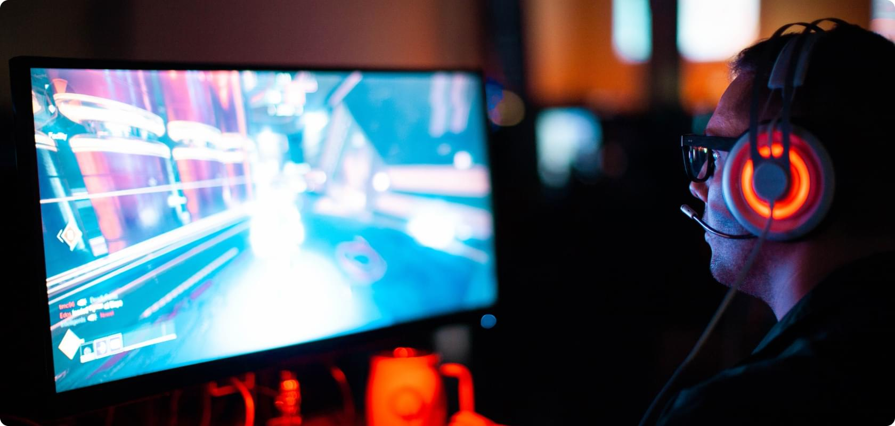
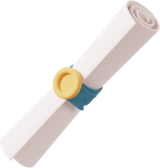

Підлітків, з творчими здібностями, які хочуть використати уяву на практиці Школярів, які хочуть отримати круту професію; Геймерів, хто хоче не просто грати, а створювати власні ігриХто прагне визначитися з конкретною професією в геймдеві.
GameDev
Розробка ігор з нуля

Курс підійде дітям, які
Інформація про курс
- 30 місяців
- 120 уроків
- 240 годин
- Заняття 2,5 год
- 1 раз на тиждень
- Від 12 до 16 років
- Онлайн або офлайн
Програма курсу
Робота з ідеєю
Проектування гри, створення і розвиток сюжетної лінії
Теми модуля
- Гейм джем. Створюємо гру на основі 2D кит
- Цільова аудиторія
- Гейм Дизайнер та його роль
- Що таке гра і для чого вона потрібна
- Велика мандрівка. Натхнення від масштабу індустрії геймдев
- Що таке гра і що не є грою, хоча на неї схоже
- Навички Гейм Дизайнера, частина 1
- Навички Гейм Дизайнера, частина 2
- Фінальне тестування прототипу
Unity
Розробка ігор на Unity. Робота зі скриптами та візуальною складовою гри
Теми модуля
- Гейм джем. Створюємо гру на основі 2D кит
- Цільова аудиторія
- Гейм Дизайнер та його роль
- Що таке гра і для чого вона потрібна
- Велика мандрівка. Натхнення від масштабу індустрії геймдев
- Що таке гра і що не є грою, хоча на неї схоже
- Навички Гейм Дизайнера, частина 1
- Навички Гейм Дизайнера, частина 2
- Фінальне тестування прототипу
Мова програмування С#
Вивчення мови С# для роботи з рушієм Unity та розробки ігор
Теми модуля
- Гейм джем. Створюємо гру на основі 2D кит
- Цільова аудиторія
- Гейм Дизайнер та його роль
- Що таке гра і для чого вона потрібна
- Велика мандрівка. Натхнення від масштабу індустрії геймдев
- Що таке гра і що не є грою, хоча на неї схоже
- Навички Гейм Дизайнера, частина 1
- Навички Гейм Дизайнера, частина 2
- Фінальне тестування прототипу
А що по закінченню?

Cертифікат, що підтвердить ваші знання
Cертифікат, що підтвердить ваші знання
Cертифікат, що підтвердить ваші знання
Cертифікат, що підтвердить ваші знання
З нами ти навчишся
- працювати з різними ігровими движками
- реалізовувати свої ідеї та режисерувати гру
- створювати інтерфейси користувача
- використовувати мови програмування С#
- реалізовувати свої ідеї та режисерувати гру
- основам роботи з Unity
- працювати з шейдерами, картами нормалій, текстурами Unity
- створювати асети для ігор
- використовувати мови програмування С#
- працювати з шейдерами, картами нормалій, текстурами Unity
- створювати ігрові рівні (Level Design)
Як швидко окупиться курс
від 4 місяців роботи
Junior
від 600$
Через 3 хвилини дізнаєшся, яка професія підходить саме тобі. Тест враховує мотивацію, навички й характер людини.
Як відбувається навчання
- 1Кожний урок включає теоретичний блок присвячений конкретній темі. Теорії приділяється 15% від уроку.
- 2Кожний урок включає теоретичний блок присвячений конкретній темі. Теорії приділяється 15% від уроку.
- 3Кожний урок включає теоретичний блок присвячений конкретній темі. Теорії приділяється 15% від уроку.
- 4Кожний урок включає теоретичний блок присвячений конкретній темі. Теорії приділяється 15% від уроку.
- 5Кожний урок включає теоретичний блок присвячений конкретній темі. Теорії приділяється 15% від уроку.
Безкоштовне пробне заняття по Game Dev
Безкоштовне пробне заняття по Game Dev. Безкоштовне пробне.